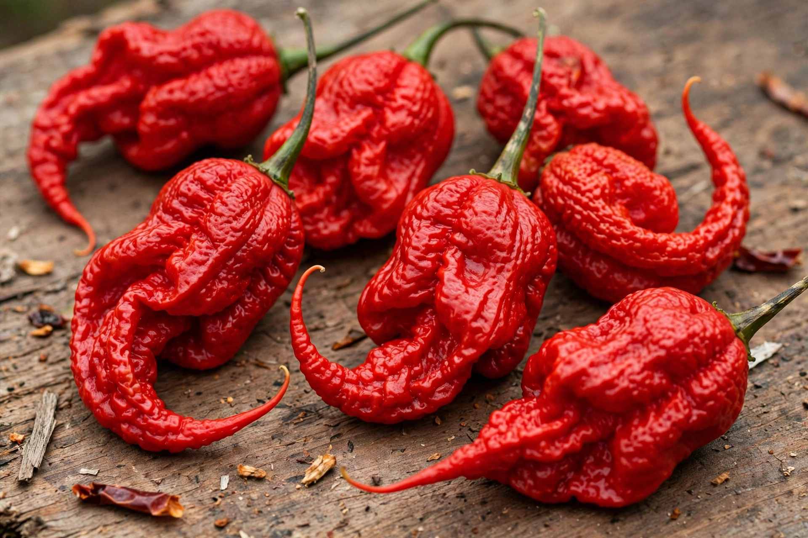

The Carolina Reaper is a cultivar of the Capsicum chinense plant developed by breeder Ed Currie in Rock Hill, South Carolina. It held the Guinness World Record for hottest chili pepper from 2013 until 2023, when Currie's Pepper X surpassed it.
Currie crossed a Pakistani Naga pepper with a red habanero type from Saint Vincent (“La Soufrière”). The fruit is gnarled and red with a distinctive pointed tail resembling a scorpion's stinger.
Tests by Winthrop University averaged about 1,569,300 Scoville heat units, with individual peppers exceeding 2.2 million. Capsaicin — not a glucosinolate — produces the burning sensation.
The Reaper is used sparingly in hot sauces and chili-eating contests; handling requires gloves, and consumption can cause severe stomach pain and headaches.